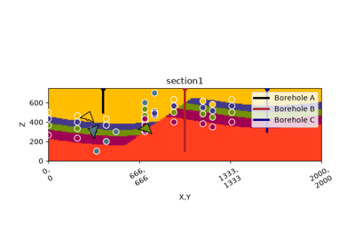
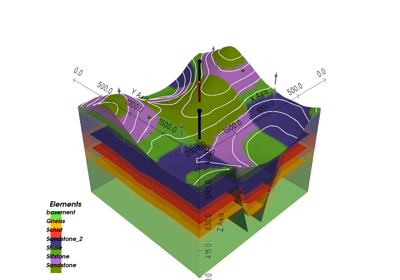

gempy.core.data.ImporterHelper¶
- class gempy.core.data.ImporterHelper(path_to_surface_points: str | None, path_to_orientations: str | None, hash_surface_points: str | None = None, hash_orientations: str | None = None, coord_x_name: str | None = 'X', coord_y_name: str | None = 'Y', coord_z_name: str | None = 'Z', surface_name: str | None = 'formation', gx_name: str | None = 'G_x', gy_name: str | None = 'G_y', gz_name: str | None = 'G_z', pandas_reader_kwargs: dict | None = None)[source]¶
Examples using
gempy.core.data.ImporterHelper¶
Video Tutorial “code-along”: Modeling step by step
Video Tutorial "code-along": Modeling step by step
2D Visualization: Sections and Custom Plots
2D Visualization: Sections and Custom Plots
3D Visualization: Interactive Model and Custom Plots
3D Visualization: Interactive Model and Custom PlotsMethods
__init__(path_to_surface_points, ...[, ...])Attributes
coord_x_namecoord_y_namecoord_z_namegx_namegy_namegz_namehash_orientationshash_surface_pointspandas_reader_kwargssurface_namepath_to_surface_pointspath_to_orientations- __init__(path_to_surface_points: str | None, path_to_orientations: str | None, hash_surface_points: str | None = None, hash_orientations: str | None = None, coord_x_name: str | None = 'X', coord_y_name: str | None = 'Y', coord_z_name: str | None = 'Z', surface_name: str | None = 'formation', gx_name: str | None = 'G_x', gy_name: str | None = 'G_y', gz_name: str | None = 'G_z', pandas_reader_kwargs: dict | None = None) None¶